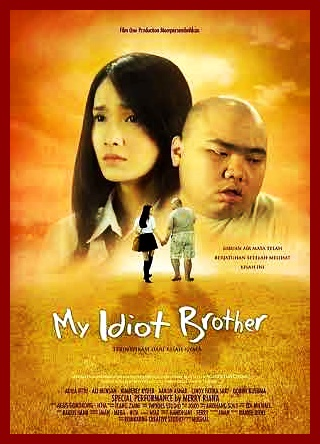

My Idiot Brother

" Ketika tidak ada lagi cara untuk mencari kebahagiaan maka kita hanya memiliki satu pilihan untuk mengorbankan apa yang kita sebut kebencian, sebab hanya dengan itulah kebahagiaan akan terlahir disamping kita "
*** Agnes Davonar Sebenarnya apa sih arti kebahagiaan. Buat gua, kebahagian itu dilihat dari siapa saja yang ada di sekitar kita. Buat gua, kebahagiaan itu. Seharusnya dalam hidup gua, hanya ada orang-orang yang berarti. Tapi, sayangnya kebahagiaan yang gua miliki rasanya dikotorin oleh pikiran gua sendiri.
Alkisah, gua punya keluarga lengkap, ayah, ibu dan seorang kakak laki-laki. Tapi kakak laki-laki gua ini sangat berbeda. Dia seperti penghalang kebahagiaan dalam hidup gua, bukan karena dia pinter ataupun bisa merebut kasih sayang orang tua gua. Tapi karena dia idiot. tapi dari dia, gua belajar akan satu hal, satu hal yang mengajarkan bahwa dialah malaikat dalam hidup gua yang berwujub manusia Idiot dalam arti kata bego, cacat dan bikin malu gua sebagai adik. Ga ada yang bisa gua banggakan dari dia, umurnya uda 5 tahun lebih tua dari gua, tapi begonya seperti 10 tahun lebih mudah dari gua. Gua gak heran, nyokap sampai harus rela nunda kelahiran gua 5 tahun kemudian, hanya demi merawat dia. Dalam bahasa kedokteran, dia itu kena sindrom Down yang bikin otak dia itu bego. Ga penting apa penyakit yang dia bawa sejak lahir, seharusnya dia itu ga pernah ada aja, karena menurut gua, dia itu hanya bikin malu gua. Sejak kecil, gua selalu bilang ke nyokap. Kalau mau jemput gua di sekolah, jangan pernah bawa Hendra ( nama kakak gua) atau gua ga kan akan pernah pulang bareng mereka. Nyokap tetap cuek aja bawa kakak gua itu. Akhirnya kalau mereka datang, gua kabur dari sekolah dan memilih pulang sekolah dengan jalan kaki. Sampai di rumah, nyokap bakal marah sama gua dengan kata2 yang sama, “ Angel, kamu ini ga tau berterima kasih, Mama sama kakak kamu sudah cape2 jemput kamu, kenapa malah kabur?” “ Siapa bilang Angel kabur?” “ Kakak kamu walau seperti ini, tapi dia itu gak akan lupa muka adiknya yang lari dari dia?” Gua terdiam dan bisa bayangkan kalau kakak gua nunjuk2 tangannya saat gua berusaha lari dari mereka, “ Siapa suruh bawa dia, Angel kan malu punya kakak bego kayak gitu.. angel sudah bilang jangan jemput kalau ada dia.. ” kata gua langsung lari ke kamar. Gua, ga pernah mau mengerti? Apakah kalimat yang gua ucapin itu, bisa membuat kakak gua ngerti kalau gua ga suka sama dia. Tapi kalimat itu cukup bikin nyokap marah. Ga peduli ya.. yang penting. Gua gak mau diledekin teman-teman karena punya kakak idiot seperti dia.
*** Sebenarnya kakak gua, gak terlalu jahat dan bikin repot gua dalam kesehari-hariannya. Dia bisa makan sendiri, bisa mandi sendiri dan bisa main sendiri tanpa perlu ditemenin siapa-siapa. Kalau tiba-tiba dia muncul saat gua lagi asyik nonton tv, gua selalu suruh dia pergi, dengan wajah dia yang bego dan mukanya yang culun. Dia malah maksa ikut nonton sama gua. Karena kesel gua teriak. “ Eh idiot pergi deh, gua males banget loe nonton sama gua.. sana pergi..” “ Angel.. adik.. kenapa benci sama kakak..” kata dia sepatah-patah, Gua terdiam. Sebenarnya ga ada jawaban kenapa gua harus benci dia. Gua Cuma merasa, hidup gua ini ga seperti teman-teman gua yang lain. Punya kakak yang normal, bisa jadi pelindung gua. Jadi teman ngobrol gua. Tapi kakak gua.. rasanya mustahil. Akhirnya gua mengalah dan pergi dari ruang tamu, membiarkan dia nonton tv sendiri. Dulu, gua gak terlalu peduli dan gak pernah sebenci itu sama kakak gua, waktu kecil, gua sering main boneka sama dia, main lari-larian. Atau berbagi tv yang sama. Gua merasa semua baik-baik saja sama dia, sampai akhirnya ketika gua mulai remaja dan pindah ke sekolah menengah pertama (SMP), semua berubah. Awalnya teman-teman gak ada yang tau kalau kakak gua itu idiot, sampai akhirnya seiring waktu banyak yang melihat sendiri kakak gua ketika nyokap jemput gua sama dia, gua mulai merasa malu. Teman teman gua yang mulai tau, kalau gua punya kakak idiot, mulai suka ngomongin gua di belakang. Kalau ada soal pelajaran yang di depan kelas ketika gua harus maju untuk jawab saat disuruh pak guru, dan gua gagal. Ada suara teriakan yang bikin hati gua sakit. “ pantes aja ga bisa, secara.. kakaknya aja idiot, apalagi adiknya..” Mendengar itu, gua jadi kesel sendiri. Dan pulang ke rumah, kalau dulu kakak gua langsung ajak gua main boneka, kali ini boneka yang dia kasih ke gua, langsung gua lempar, “ jangan main sama gua lagi,..” “ Ke.. napa ?” Tanya kakak gua. “ Gua malu punya kakak idiot kayak loe..” Dia terdiam. Mungkin berpikir apa yang gua lakuin ke dia.tapi gua ga peduli. Jadi mulai saat itu setiap dia ajak gua main, gua akan marah dan gak mau. Nyokap selalu suruh gua main sama dia dan gua malah nangis. “ Mama, kenapa sih Angel punya kakak cacat kayak gitu, Angel kan malu di sekolah teman-teman pada ledekin angel.. idiot, bego-lah ini itu, angel malu ma..” Mama malah nampar gua dan kakak gua ngeliat itu. Dia langsung tarik tangan mama gua. “ dasar anak gak tau diri, berani-beraninya kamu ngomong gitu ke mama dan kakak kamu..” “ salah apa Angel, salah kalau ngomong jujur kalau angel malu.. malu punya kakak kayak gitu.. cacat, bego, idiot…” kata gua sambil lari ke kamar. nyokap hanya bisa peluk kakak gua, kakak gua yang mungkin cacat, dia pasti mengerti rauk wajah gua yang emosi dan marah. Nyokap hanya bisa nangis dan kakak gua belai rambut dia dengan perlahan seperti membelai kucing yang sering dia temukan di jalan.
*** Bokap gua, kerja di di pertambangan jadi gak pernah pulang kalau setahun sekali. Kalau pulang pun, dia lebih banyak habisin waktu sama kakak gua yang cacat, padahal gua juga anaknya, tapi kasih sayang ke gua Cuma sebatas ngasih duit dan cium di kening, beda sama kakak gua yang dianggap anak emas. Gua ga perlu iri dengan yang ini, yang penting gua dapat uang saku sebab gua tau, nyokap ga akan kasih duit ke gua kalau ga ada ember-ember mau temenin kakak yang idiot untuk main bersama. Yang namanya remaja, pasti mulai merasakan jatuh cinta. Jadi, di sekolah seberang, ada anak ganteng yang gua suka banget namanya Aji. Gua sering ngeliat dia main basket bareng anak-anak cowok di sekolah gua di taman. Suatu ketika, gua sampai rela-rela jadi pembokat klub basket sekolah yang khusus bawain minum buat pemain basket Cuma untuk kenal sama dia. Gua gak jelek dan juga cantik, tapi gua yakin kalau cinta yang tulus pasti kelak akan terbalas. Tanpa gua sadari, Aji sering liat gua jalan kaki pulang ke rumah, dia kan naik motor. Merasa kasihan atau emang suka sama gua, akhirnya dia nawarin tumpangan. Astaga, hati gua benar-benar berbunga-bunga banget ketika tawaran itu datang ke gua. Tapi gua tau, akan jadi masalah kalau sampai dia tau rumah gua dan ngeliat kakak gua yang cacat, dengan terpaksa gua suruh dia anterin gua jauh 100 meter dari rumah gua, sebab gua tau, kakak gua selalu sambut gua di depan rumah setiap gua mau pulang. Apa jadinya kalau dia tau gua punya kakak cacat, pasti dia ilfeel sama gua. Tanpa terasa , gua semakin dekat sama dia. Impian gua untuk punya pacar seperti dia nyaris tercapai ketika dia undang gua ke ulang tahun dia sebagai tamu istemewa. Gua tentu harus kasih dia hadiah yang istemewa. Oleh karena itu, gua harus sogok nyokap gua dengan berpura-pura baik dan mau main sama kakak gua yang idiot itu sampai duit gua ke kumpul untuk kasih hadiah ke Aji. Diam-diam, gua pernah nanya ke dia, mau hadiah apa kalau nanti ultah. “ apa aja dari kamu aku terima kok, walau hanya bunga di jalan..” ujar Aji yang bikin jantung gua nyaris copot karena romantis Dari teman-teman dia, gua tau. Aji paling suka yang namanya helm sport. Tapi harganya mahal banget, dan gua tau, apapun yang gua lakukan sekaligus jadi baby sister kakak gua yang cacat, gak akan dapat beli itu helm. Terpaksa gua mikir hadiah lain untuk dia. Sambil nemenin kakak gua main, gua jadi baying-bayangin apa yang harus gua beli. Kakak gua yang merasa gua suka bengong lalu nanya. “ Kok , main monopolinya lama , adik bengong ya..?” kata kakak gua yang walau idiot jago sekali itu duit. “ mau tau aja, “ kata gua sambil melangkahkan langkah monopolinya. Tiba-tiba gua jadi kepikiran, mungkin gak ya, kakak gua yang idiot ini punya duit untuk sumbang bantu gua beli helm. “ Eh, kak, punya duit gak?” kata gua dan dia langsung nyodorin duit monopoli yang bikin gua BT. “ Duit beneran tolol, bukan duit kayak gini, duit kayak gini gua juga banyak..” “ buat.. apa?” Tanya dia kalau ngomong suka kepatah-patah khas orang tolol. “ ada kagak..?” Tanya gua kesel. Tiba-tiba dia hilang ke kamarnya dan balik lagi dengan toples yang berisi uang benaran. “ ini.. untuk adik..” “ sumpeh loe.. duit ini hasil tabungan loe selama ini, banyak bener..” “ untuk adik.. kakak kasih..” “ yakin..” “ ia.. tapi temanin kakak beli permen di supermarket..” “ Cuma itu doang syaratnya.. gampang banget. Capcus yukkk” kata gua sambil gandeng dia ke supermarket terdekat. Akhirnya berkat kakak gua, gua bisa beli hadiah terindah untuk Aji. Rasanya bahagia sekali, tapi gua tau, aji ini pasti bakal undang banyak orang dalam ulang tahunnya. Jadi gua harus jadi special di hari itu, gua harus dandan yang cantik dan benar-benar terlihat hebat di pesta ulang tahun dia. Sampailah tiba pada waktunya. “ mau kemana Angel?:” Tanya nyokap gua sambil nonton tv sama kakak gua. “ mau ke ulang tahun teman. “ “ kamu ada ambil duit kakak kamu ya?” Tanya nyokap. “ kagak tuh, dia yang ngasih sendiri, Tanya aja sendiri sama dia..” “ ooo. Pantesan duit tabungan dia habis,. Kamu tau gak, dia nabung duit itu buat beli kado ulang tahun kamu minggu depan.. “ kata nyokap yang langsung bikin gua sadar kalau minggu depan gua ulang tahun. “ oo. Gitu, makasih deh, sama aja kan duitnya juga ke angel sekarang.” “ mau ke ulang tahun dimana Angel..” “ disamping sekolah itu, kafe hijau. Si kakak juga tau, kan sering minta beli es hijau disana..” “ yauda, hati-hati..” Dengan perasaan bebas merdeka tanpa larangan nyokap, akhirnya gua melangkah kaki seribu menuju ulang tahun Aji. Sampai disana, gua benar-benar ga salah tebak, banyak cewek2 yang diundang ke ulang tahun dia, termasuk Agnes, musuh bubuyutan gua di sekolah yang suka reseh. Saat gua masuk ke dalam dia langsung negur gua. “ eh adiknya si idiot, datang juga kesini.. ngapain? Gak bawa kakak loe kesini? “ kata dia dan gua diem aja. Gua melihat Agnes uda bawa kado dan tiba-tiba teringat kalau kado gua ketinggalan di rumah. “ kado dari gua istemewa loh, kado dari loe mana ngel? Jangan bilang loe datang Cuma mau numpang makan gratis.’ “ gak usah reseh deh u. gua punya kado, kado yang gak perlu gua kasih liat ke loe..” “ oh ya.. Alhamdulillah ya..( berujar mirip arti syarini) masih tau diri juga..” Agnes pergi ninggalin gua, dan gua merasa bodoh sekali ketinggalan kado untuk Aji, kalau balik lagi ke rumah pasti acara penting pemberian kue ulang tahun pertama dari Aji bakal kelewat. Gua gak akan rela kalau si Agnes yang dapat kue pertama. Gua pun berpikir memeras otak untuk membuat suasana jadi gak rusak. Dirumah. Kakak gua yang bodoh itu, tiba-tiba ngeliat hadiah kotak yang gak sengaja terletak di lantai, jadi kado itu ketinggalan saat gua lagi iket tali sepatu, dan langsung ninggalin begitu aja. Dia tau dan pasti inget kalau gua akan ke pesta ulang tahun yang tadi gua sebutin, dengan nekad dia bawa kado itu sendirian tanpa sepengetahuan nyokap gua yang lagi cuci piring di dapur. Walau bersusah payah mengingat jalan, akhirnya dia tiba juga di depan tempat kafe hijau sambil bawa kado di tangannya. Ketika pesta berlangsung dan Aji mulai mau sebutin kue pertama dia, gua dan Agnes saling berpikir untuk mendapatkannya. Tapi tiba-tiba Aji menyebut nama gua, gua senang banget dan maju dengan muka kemenangan di depan Agnes yang sewot mampus. “ aji maaf ya, kadonya ketinggalan nanti aku kasih besok pas di lapangan basket ya..” “ iya gapapa, ini kue pertama special untuk kamu.” Dan saat moment penting itu, kakak gua yang idiot muncul. Sambil berteriak. “ adik.. adik.. adik… ini kadonya.. kadonya..” Semua orang melihat ke kakak gua. Dan aji pun gitu. Muka gua langsung terkejut. Agnes mengunakan kesempatan itu sambil berkata. “ wah, kakaknya si Angel datang tuh, si idiot.. akhirnya adik dan kakak idiot berkumpul hahahaha ” Kakak gua yang marah kerena merasa Agnes meledek gua, langsung menyerang Agnes hingga mukanya jatuh ke depan kue ulang tahun dan terceplak di mukanya. Gua yang malu melihat kejadian itu langsung panic. Aji bertanya. “ itu kakak loe..” gua bengong sambil tak bisa menjawab apa-apa “ bukan.. dia bukan kakak gua..” kata gua lari keluar dari pesta dan merasa malu sekali, karena panic tanpa sadar sepeda motor melaju cepat dan menabrak gua sampai akhirnya gua terpentar tanpa bisa melihat apapun selain orang terakhir di atas bayangan mata gua adalah kakak gua yang berteriak-teriak Adik.. adik..
*** Dua minggu kemudian, gua terbangun, terbangun dengan kondisi tanpa bisa mengerakan kaki dan tangan gua, tulang leher gua patah karena tabrakan itu. Nyokap sama bokap ada disamping gua. Tapi ada yang kurang lengkap dari kedua orang itu, yaitu kakak gua. “ ma, aku dimana?” kata gua sambil merasakan mata yang sakit. “ dirumah sakit.. kamu uda gak bangun sejak 5 hari lalu, kamu koma selama itu.” Gua melihat sekeliling dan memang gua ada di rumah sakit dan beberapa alat kedokteran,. Tapi bukan itu yang gua mau lihat. Gua mau lihat kakak gua, gua merasa dalam tidur gua, selalu terbayang dia. Bayangan dimana mimpi saat masa kecil yang bahagia bermain sama dia, dia gendong gua, dia kasih makanan yang gua suka dan terakhir dia bilang dia sayang gua dengan terpatah-patah. “ kakak mana?” Nyokap menangis, dan bokap terdiam dengan berat hati berkata. “ dia lagi dirawat di ruang sebelah ..” “ loh dia sakit apa? Kok juga masuk rumah sakit?” Gua bangkit dan bonyok membantu gua berjalan ke ruangan sebelah dan melihat kakak gua yang sedang tertidur sambil meluk boneka yang dulu sering dia kasih ke gua.. gua melihat kakak gua dengan keprihatinan dan matanya kedua tertutup dengan perban, “ kakakmu memberikan kedua matanya untuk kamu, ketika kecelakaan kamu terjatuh dan kedua matamu rusak karena cairan laksa yang dibawa motor itu terkena mata kamu.” “ astaga. Jadi kakak ga bisa ngelihat lagi dong..” Gua menangis saat mendengar kalimat itu. “ bukan Cuma itu, ada pendarahan yang terjadi setelah operasi dan kakak kamu jadi kritis gini.” Gua meraih tangan kakak gua, sambil berkata. “ kakak, bangun, maafin Angel.. kakak, bangun. Angel janji setelah kakak sembuh, angel akan sayang sama kakak lagi.. angel mohon..” Tangan kakak gua bergerak dan berkata dengan seperti biasanya. “ adik.. adik.. kakak sayang kamu.. selamat ulang tahun” kata kakak gua untuk ucapaan terakhir dia Dan kalimat itulah terakhir yang gua dengar dari dia. Dia telah pergi untuk selamanya, selamanya untuk membuat gua tetap hidup dengan kado kedua matanya untuk gua. dokter sempat menolak untuk memberikan matanya ke gua, tapi kakak gua ngotot. dia merasa tidak boleh ada orang lain yang cacat yang sama di keluarga ini selain dia, mama juga nolak, tapi kakak gua marah dan gak mau makan sampai dia bisa kasih kedua matanya untuk gua. akhirnya mama luluh, dia ikhlas, dan opearasi ke gua berhasil tapi kakak gua alami pendarahan dan akhirnya kritis dan pergi untuk selamanya. Selamanya untuk membuat gua merasa tak perlu merasa malu memiliki kakak seperti dia. Dia bukan hanya seorang kakak yang bertahan atas penderitaan yang dia miliki sebagai anak yang lahir dengan kerterbatasannya, tapia dia adalah seorang kakak berhati malaikat yang tanpa pernah berhenti mencintai gua sebagai adiknya. Tanpa pernah merasa sakit hati oleh kalimat kalimat yang terkadang lebih menusuk daripada gua memukulnya dengan keras. Kakak, karena dirimu lah kini aku sadar, Aku tidak terlahir untuk sempurna tanpamu, walau dunia ini mungkin tidak pernah adil untuk kehidupanmu saat ini, apapun yang kamu lakukan atas dasar yang kau pikirkan, kaulah tetap kakakku yang terbaik, terbaik yang ingin pernah kusampaikan kepada dunia. Bahwa hanya ada satu kesempatan untukku bersamamu dalam hidup ini yaitu saat saat kau hidup bersamaku. selamat jalan kakak tercintaku.